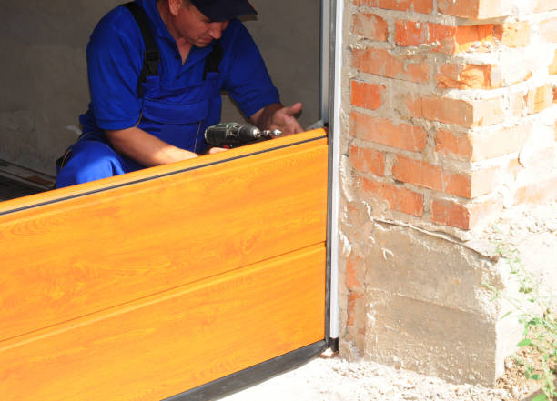
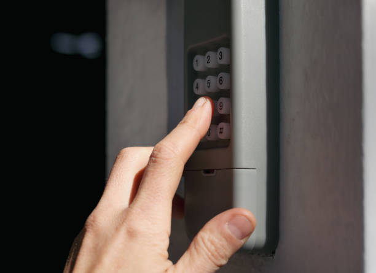

Lockport New York
info@ohmykitchen.pro
Lockport New York
info@ohmykitchen.pro

Enhance your Lockport New York home with durable and stylish countertops. Wide range of materials, precise installations, and unmatched customer care for a seamless remodeling experience.
Click Here To Call Us (877) 848-1711If you’re looking for premium countertops in Lockport New York our company specializes in providing high-quality, stylish, and durable solutions to elevate your home or business. Countertops are more than just functional surfaces – they are a key design element that adds value and sophistication to any space.
We offer a wide variety of countertop materials, including granite, quartz, marble, and laminate, catering to both traditional and modern tastes. Our team works closely with you to choose the perfect material, color, and finish to suit your unique style and requirements. Whether you’re updating your kitchen, remodeling a bathroom, or upgrading your commercial space, we deliver countertops that combine beauty with long-lasting performance.
What sets us apart is our commitment to customer satisfaction and precision craftsmanship. We use advanced technology to measure and fabricate countertops, ensuring a flawless fit every time. Our installation experts in Lockport New York take care of every detail, from start to finish, to guarantee seamless results.
Transform your space with countertops that blend elegance, durability, and functionality. Contact us today to schedule a consultation and discover why we’re the trusted choice for countertop solutions in Lockport New York . Let us help you turn your vision into reality!
Residential & commercial Countertops
Quality services at affordable prices
Immediate 24/ 7 emergency services


Choosing the perfect countertop for your kitchen or bathroom in Lockport New York is a crucial decision that impacts both the functionality and aesthetic appeal of your space. When selecting the right countertop material, there are several factors to consider, such as durability, style, maintenance, and budget.
1. Durability and Strength
For high-traffic areas like kitchens, durability is essential. Granite and quartz are popular choices due to their strength and resistance to scratches, stains, and heat. They’re ideal for homeowners in Lockport New York who desire a countertop that will last for years. For bathrooms, marble and engineered stone offer a balance of beauty and strength, perfect for a space that experiences less wear and tear.
2. Style and Design
The design of your countertop should complement the overall aesthetic of your kitchen or bathroom. If you're aiming for a modern look, sleek quartz or solid surface materials are excellent choices. For a more classic, luxurious feel, granite or marble can bring an elegant touch. Consider how the countertop color and pattern blend with your cabinetry and other elements in your Lockport New York home.
3. Maintenance
While quartz and solid surfaces are low-maintenance and resistant to stains, natural stones like granite and marble may require sealing to protect against moisture and stains. Be sure to weigh the time you’re willing to dedicate to maintenance.
4. Budget
Your budget will ultimately influence your choice. While granite and marble offer timeless appeal, they can be more expensive. Quartz is a cost-effective alternative that doesn’t compromise on quality or style.
Choosing the right countertop in Lockport New York means finding a material that suits your needs, lifestyle, and design preferences. Make an informed decision to create a space that combines style, practicality, and long-term value.
Residential & commercial Countertops
Quality services at affordable prices
Immediate 24/ 7 emergency services
Elevate your home bar with stunning countertops that impress your guests while providing a durable surface for entertaining. Our countertop services for home bars focus on creating stylish and functional spaces.
Why choose us for your home bar countertops? We specialize in a range of materials—from stone to solid surface to reclaimed wood—allowing you to customize the aesthetic and functionality of your bar. Our design team will work closely with you to ensure that your home bar reflects your personal style while providing practicality and durability. With our expertise, you can create a gathering place that is both inviting and luxurious—trust us to craft the perfect countertops for your home bar!

As sustainability becomes increasingly important in home design, our eco-friendly countertop options in Lockport New York cater to environmentally conscious homeowners. We offer a selection of sustainable materials, including recycled glass, bamboo, and reclaimed wood, ensuring that your countertops reflect your values without compromising on style or performance.
Our team is committed to helping you select the best eco-friendly materials that fit your design needs. We believe that you shouldn’t have to sacrifice beauty for sustainability. Our eco-friendly countertops can be customized in various colors and finishes, making them a beautiful addition to any room in your home.
Installation of eco-friendly countertops requires the same level of expertise as traditional materials, and our skilled team is dedicated to ensuring every installation meets the highest standards of quality and craftsmanship.
Choose our eco-friendly countertops and enjoy the peace of mind that comes from making sustainable choices for your home. You'll contribute to a healthier planet while enjoying beautiful, functional surfaces designed for modern living.

Elevate your home with our luxury countertop installation services specializing in high-end materials that exude elegance and sophistication. We provide exquisite options, including rare stones and innovative composites, designed for discerning clients who value craftsmanship and beauty.
Our team works closely with you to understand your vision and ensure the final product perfectly integrates with your home’s design. From unique granite slabs to stunning quartzite and onyx, each installation is customized to elevate your space and reflect your style.
Choosing us for your luxury countertop installation means collaborating with professionals who are dedicated to excellence. Our commitment to sourcing high-quality materials and providing expert installation creates extraordinary spaces that speak volumes about superior taste and style.

For businesses demanding durability, functionality, and aesthetic appeal, our commercial kitchen countertop installation services are tailored to meet the highest standards. We recognize that commercial kitchens require surfaces that can withstand heavy use while maintaining a professional appearance.
Our selection of commercial-grade materials includes stainless steel, solid surface, and high-quality stone, offering the resilience needed for high-traffic environments. Our team works collaboratively with you to design and install countertops that maximize workspace while fitting your aesthetic needs.
Whether in restaurants, catering businesses, or food production facilities, our expert installation ensures that your countertops can handle the rigors of daily commercial use. We also offer maintenance support to keep your countertops looking pristine and functioning efficiently.
Investing in our commercial kitchen countertop installation means selecting a partner who understands the unique demands of your industry and is committed to delivering outstanding results that enhance your business operations.

Elevate your retail space with our custom countertop installation services in Lockport New York . Countertops in retail environments not only need to be functional but also need to attract customers and complement your brand's identity. Our team specializes in creating visually appealing and practical countertop solutions tailored to retail settings.
We offer a variety of materials that combine form with function, including laminate, solid surface, and concrete. Each material can be customized in terms of color, texture, and edge design, allowing you to create a unique atmosphere that resonates with your brand.
Our experienced installers ensure that each countertop fits perfectly within your space while adhering to the highest standards of quality and craftsmanship. By focusing on aesthetics and durability, we aim to enhance the overall shopping experience for your customers.
With our retail store countertop solutions, you’re making a valuable investment in your business's presentation and functionality. Trust us to help you create an inviting and stylish retail environment that draws in customers.
The hospitality industry demands elegance and durability, and our hotel and restaurant countertop solutions provide the perfect combination of both. We understand that the countertops in these environments need to make a lasting impression while also standing up to daily wear and tear.
Our team specializes in a range of high-quality materials tailored to suit restaurants, bars, and hotel lobbies. From sophisticated granite and marble to resilient solid surface options, we have the expertise to install countertops that align with your brand’s aesthetic and functional needs.
We work closely with architects and designers to create customized solutions that enhance the overall ambiance of your space. Our meticulous installation process ensures that your countertops are not only visually stunning but also meet the operational demands of a busy environment.
Invest in our hotel and restaurant countertop solutions for a sophisticated and functional space that leaves a lasting impression on your guests. Experience our commitment to quality and customer service firsthand.

Create a productive and stylish workspace with our office countertop installation service in Lockport New York . We specialize in providing a variety of countertop solutions that cater to the unique needs of offices, from reception areas to workstations. Our countertops are designed to enhance functionality while creating a professional atmosphere.
Why choose us? Our team understands that the office environment should be a blend of beauty, comfort, and practicality. We offer materials that suit all styles, ensuring your office space reflects your company culture while supporting daily operations. Our expert installation guarantees workspaces that function seamlessly while providing aesthetic appeal. Upgrade your workplace with our professional office countertop installation services in Lockport New York .

In demanding environments like medical facilities and laboratories, hygiene and durability are key components to consider for countertops. Our specialized countertop services for medical and laboratory settings cater to those critical needs.
Why choose our services? We understand the stringent requirements of medical and lab environments, offering materials that are easy to clean, resistant to chemicals, and built to last. Our experienced team ensures proper installation, meeting all health and safety regulations. We work closely with facility managers to provide customized solutions tailored to their unique space. Trust us to deliver countertops that are safe, efficient, and suitable for even the most sensitive environments!
Years Experience
Expert Technicians
Satisfied Clients
Compleate Projects
At ohmy kitchen, we understand that your countertops are more than just functional surfaces; they are the heart of your kitchen’s aesthetic and practicality. Serving homeowners across Lockport New York we offer high-quality countertops that blend durability with elegance. Our team is committed to providing custom solutions that meet your unique style and needs, ensuring your kitchen becomes a place you'll love.
Why choose us? First, our selection is unmatched. From timeless granite and sleek quartz to eco-friendly options, we offer a variety of materials to suit any taste and budget. Whether you're renovating your kitchen or designing from scratch, ohmy kitchen ensures that your countertops complement your overall design vision.
Second, our craftsmanship is second to none. With years of experience serving Lockport New York our team installs countertops with precision and attention to detail. We take the time to ensure each installation is seamless, leaving you with a flawless result that will stand the test of time.
Lastly, we pride ourselves on excellent customer service. From the initial consultation to post-installation care, we are with you every step of the way. At ohmy kitchen, we believe in building relationships, not just completing projects. Choose us for your countertop needs in Lockport New York and discover why we are the preferred choice for homeowners looking for quality and reliability.
When it comes to durability and timeless beauty, granite countertops stand unmatched. Granite is a natural stone that not only enhances the aesthetic appeal of your kitchen or bathroom but also ensures longevity and resilience against wear and tear. In Lockport New York our granite countertop installation service provides a seamless blend of functionality and style, making it a top choice for homeowners looking to elevate their spaces.
Choosing our services means partnering with experts who have extensive experience in granite countertop installation. Our team understands the nuances of working with natural stone, ensuring precision in every cut and placement. We source high-quality granite slabs from trusted suppliers to guarantee that you receive only the best material for your home. Each installation is customized to fit your unique kitchen or bathroom layout, reflecting your personal style and preferences.
Moreover, our commitment to customer satisfaction ensures that we guide you through the entire process, from selecting the right granite to the final installation. With us, you not only get a beautiful granite countertop but also a reliable and stress-free experience.
Quartz countertops have become synonymous with elegant and functional surfaces in kitchens and bathrooms alike. Combining the beauty of natural stone with engineered reliability, they offer a non-porous, scratch-resistant surface that’s perfect for busy households. Our quartz countertop installation services ensure you get premium materials and expert craftsmanship tailored to your style.
What makes us the best choice for your quartz needs? We offer a vast array of colors and finishes, allowing you to personalize your space effortlessly. Our team takes pride in their attention to detail, ensuring precise installation that fits perfectly. Furthermore, we provide ongoing support and maintenance tips to keep your quartz countertops looking brand new. Choosing us means choosing quality, durability, and style—your satisfaction is our priority!
Marble countertops evoke sophistication and luxury. If you are contemplating a marble countertop installation our team is here to guide you through the process. Marble offers unparalleled beauty with its unique veining and color variations. Perfect for kitchens and bathrooms alike, marble adds a touch of class and elegance that few materials can match.
Choosing us means choosing expertise and quality. We specialize in the intricacies of marble installation, ensuring every slab is aligned perfectly and finished to your specifications. Our extensive experience means you can rely on us to avoid common pitfalls associated with marble as a material, such as seaming and finishing. We are dedicated to delivering exceptional results that will enhance the beauty of your space for years to come. Discover the timeless appeal of marble countertops in Lockport New York with our professional installation services.
For those seeking a warm, inviting kitchen atmosphere, butcher block countertops are an ideal choice. Made from hardwood strips bonded together, butcher block provides a durable and stylish surface perfect for food preparation and casual dining. Our butcher block countertop installation services offer a wide range of options, from traditional to modern styles that cater to your personal taste.
Our team specializes in seamless installations, ensuring that your butcher block is cut, fitted, and finished to perfection. We prioritize quality, using sustainably sourced woods that not only enhance your kitchen aesthetic but also offer longevity and resilience against wear and tear.
Choosing us means you are working with experts who are passionate about their craft. We believe in delivering exceptional results that truly reflect the character of our clients. Additionally, we provide guidance on maintenance and care, ensuring your butcher block countertops remain beautiful for years to come.
If affordability and versatility are your main considerations, laminate countertops provide an effective solution that doesn’t compromise on style. Laminate is available in a vast array of colors and patterns, making it perfect for various decor styles. Our laminate countertop installation services ensure you receive a high-quality product tailored to your specific needs.
Our installation process is designed to be efficient without sacrificing craftsmanship. We utilize superior quality laminates that are scratch and water-resistant, ensuring longevity. Our skilled professionals will guide you through selecting the right laminate that matches your vision and elevates your space.
You should choose us for your laminate countertop installation because we pride ourselves on delivering exceptional value. Our commitment to customer satisfaction means that we are always ready to address your concerns and make recommendations based on best practices. We strive to ensure that your new countertops enhance your home and provide years of reliable service.
Solid surface countertops are renowned for their sleek design, ease of maintenance, and versatility. They are a popular choice among homeowners who want a seamless and contemporary look for their kitchens and bathrooms. Our solid surface countertop installation services provide you with a wide range of colors and designs to fit your unique style.
What sets us apart? With our expertise in solid surface materials like Corian and Hi-Macs, we ensure that your installation is seamless and impeccable. Our knowledgeable team will guide you through the customization process, helping you select the best options for your space. Moreover, our commitment to quality workmanship and customer satisfaction means you’ll receive the highest standard of service from start to finish. Let us enhance your home with stylish and durable solid surface countertops!
For homeowners who desire an industrial chic flair, concrete countertops are a fantastic option. They offer an array of finishes, colors, and textures that can be customized to fit any aesthetic. Our concrete countertop installation services allow you to harness the creative potential of concrete, transforming your kitchen or bath into a freestyle design.
Our team of experts specializes in crafting bespoke concrete solutions, ensuring that your countertops not only meet but exceed your expectations. We utilize high-grade materials and innovative techniques to deliver durable and visually appealing results that stand the test of time.
Why choose us for your concrete countertop installation? We are dedicated to client satisfaction through personalized service and quality workmanship. Our skilled artisans understand the nuances of concrete and work meticulously to create a finished product that enhances your space’s uniqueness.
Embracing sustainable design is increasingly important in today’s world, and recycled glass countertops offer an eco-friendly solution that doesn't compromise on style. These countertops are made from post-consumer glass tempered with resin, resulting in a durable, chic surface for kitchens and bathrooms alike. Our recycled glass countertop installation services help homeowners create beautiful, sustainable spaces.
Our team is passionate about providing environmentally conscious options while ensuring quality and artistry. Recycled glass countertops are available in numerous colors and patterns, allowing you to bring a splash of chic elegance to your space.
Choosing us means you are partnering with professionals who share your commitment to sustainability. We emphasize the use of eco-friendly materials and practices throughout the installation. Our experienced team is not only knowledgeable about installation but also about the benefits of this innovative material, helping you make an informed decision for your home.
At the heart of any great kitchen or bathroom is a stunning countertop that reflects your personal style. Our custom countertop design and fabrication services allow homeowners to transform their dream design into reality. Whether you prefer granite, quartz, marble, or any other material, we help craft countertops that are uniquely yours.
Our process begins with a consultation to understand your vision and requirements. Our design specialists work with you to create unique solutions that blend functionality and aesthetics seamlessly. From concept to reality, our skilled fabricators handle every aspect, ensuring attention to detail and a perfect match to your design.
Choosing us for your custom countertop needs means opting for a dedicated partner in your design journey. Our reputation in Lockport New York is built on our commitment to craftsmanship and client satisfaction. We utilize state-of-the-art technology and skilled artisans to deliver products that exceed expectations.
If your current countertops are showing signs of wear and tear or simply no longer match your style, our countertop replacement services are here to help. Upgrading your countertops can significantly enhance the look and functionality of your kitchen or bathroom, increasing your home's value in the process.
Our replacement process begins with a thorough assessment of your existing countertops. We work closely with you to choose the perfect new material, taking into consideration aesthetics, durability, and budget. From granite to laminate, we have a wide selection of high-quality materials available to suit every homeowner's style and preference.
Our experienced installers ensure a smooth removal of your old countertops and a seamless installation of your new ones. We pride ourselves on our attention to detail and commitment to customer satisfaction. Once your replacement is complete, we provide care and maintenance tips to help keep your new countertops looking beautiful for years to come. Trust us to transform your space with stunning new countertops that reflect your taste and enhance your home’s overall appeal.
Transform your outdoor space into a culinary haven with our outdoor kitchen countertop installation services in Lockport New York . Whether you’re entertaining guests or enjoying a family barbecue, having the right countertops can elevate your outdoor cooking experience.
Our team specializes in materials that are suited for outdoor environments, ensuring they withstand the elements while providing style. We offer a variety of options including granite, concrete, and recycled glass that are designed to resist fading, stains, and moisture. Our goal is to create a functional and beautiful outdoor kitchen that you'll love to spend time in.
From the initial design phase to the final installation, we work closely with you to ensure that your outdoor countertops meet your aesthetic and practical needs. We understand that outdoor living spaces require special considerations, and our expertise ensures that you receive a stunning and durable solution.
When you choose our outdoor kitchen countertop services, you receive exceptional craftsmanship combined with premium materials, resulting in a space that is perfect for entertaining and cooking. Enjoy the outdoors and take your cooking to another level with our expertly installed kitchen countertops.
The kitchen island often serves as the hub of the home, making it essential to choose the right countertop that balances functionality and style. Our kitchen island countertop installation services offer a variety of materials and designs personalized to meet your needs.
Why choose our team for your kitchen island? We offer an extensive selection of high-quality surfaces, from granite and quartz to butcher block and more. Our experienced designers will work with you to create a custom island that complements your kitchen's decor while maximizing your space. Additionally, our expert installation will ensure that your kitchen island is both practical and beautiful. Trust us to deliver a functional centerpiece to your home with our kitchen island countertop solutions!
Transform your bathroom into a luxurious retreat with our stylish bathroom countertop installation services in Lockport New York . We offer a range of materials to enhance the elegance and functionality of your bathroom space.
Why are we the best option for your bathroom countertops? Our expert team understands the unique challenges of bathroom renovations, from moisture resistance to durability. We help you choose the best material, whether it’s elegant marble, functional quartz, or beautiful solid surface, to meet your specific needs. We are committed to excellent craftsmanship and customer service, ensuring a hassle-free installation process. Elevate your bathroom’s style and utility with our premium countertop options!
The edge design of your countertops can significantly impact the overall look and feel of your space. Our countertop edge design and customization services provide you with the opportunity to choose from a variety of edge styles that suit your taste.
Why choose us for your edge design? Our skilled team offers a wide range of customization options, from classic straight edges to more elaborate profiles like bullnose or waterfall designs. We understand that the finishing touches matter, and we pay close attention to detail to ensure your countertops look flawless. Whether you prefer a modern aesthetic or a traditional design, we can help you achieve your desired look while maintaining the highest quality. Let us assist you in creating unique and stunning edges that enhance your countertops!
Breathe new life into your old countertops with our professional countertop resurfacing services . This cost-effective solution can significantly enhance the appearance and durability of your surfaces without the need for complete replacement.
Why choose our resurfacing services? Our experienced team specializes in a variety of materials, allowing us to resurface your countertops to look as good as new. We utilize high-quality materials and advanced techniques to ensure a flawless finish, extending the lifespan of your surfaces. Our resurfacing service is quick, efficient, and designed to minimize disruption in your home while providing superb results. Trust us to revitalize your countertops with our exceptional resurfacing solutions!
When accidents happen, our countertop repair and restoration services are here to help. Whether it's a scratch, chip, stain, or other damage, our experienced team has the skills and materials needed to restore your countertops to their former glory.
We understand that your countertops are a significant investment and play a vital role in your home. That’s why we employ the best techniques and high-quality materials to perform repairs that are both effective and discreet. From natural stone to solid surface materials, our team is ready to tackle any repair projects, ensuring that the finish matches as closely as possible to the existing surface.
Our restoration services often involve more than just surface fixes; we also address underlying issues to prevent future damage. We take the time to evaluate your countertops thoroughly and provide tailored recommendations for repair or restoration.
Choosing us for your countertop repair means selecting a reliable partner who values quality and customer satisfaction. With our expertise, your countertops will be restored beautifully, maintaining their functionality and aesthetics.
Proper care and maintenance of stone countertops are essential to preserving their beauty and functionality. Our sealing and maintenance services in Lockport New York are designed to protect your investment and ensure that your surfaces remain in pristine condition for years to come.
We offer thorough sealing services using high-quality sealants that provide an effective barrier against stains and moisture. Our maintenance plans are tailored to your specific countertops, addressing any wear and ensuring your surfaces are regularly cared for.
Choosing us means you are partnering with experts in stone countertop maintenance. With a focus on quality service and customer satisfaction, we help you protect your investment and extend the life of your countertops, providing peace of mind that your surfaces will remain beautiful and functional.
When it comes to selecting the ideal countertop material for your home or business in Lockport New York granite, quartz, and marble stand out as top choices. These materials not only add elegance to any space but also provide exceptional durability and functionality.
Granite Countertops are known for their rugged strength and heat resistance, making them perfect for high-traffic kitchens or bathrooms. With unique patterns and colors, granite adds a natural charm that enhances the aesthetics of your home. It's also highly scratch-resistant, making it ideal for busy areas in Lockport New York .
Quartz Countertops offer a low-maintenance alternative, combining beauty and practicality. Engineered from natural quartz stone and resin, they are incredibly durable, resistant to stains, and non-porous, making them easy to clean. Quartz countertops are also available in a wide range of colors and patterns, providing endless design possibilities for your Lockport New York home.
Marble Countertops are synonymous with luxury and timeless beauty. Known for their elegant veining and smooth surface, marble countertops elevate any space in Lockport New York . While they require more maintenance than granite or quartz, their sophisticated appearance is well worth the extra care. Marble is perfect for those who seek a blend of style and class.
Whether you opt for the rugged durability of granite, the low-maintenance appeal of quartz, or the timeless elegance of marble, these materials offer numerous benefits for homeowners in Lockport New York . Choose the right countertop for your needs and enjoy lasting beauty and functionality for years to come.
Lockport is both a city and the town that surrounds it in Niagara County, New York, United States. The city is the Niagara county seat, with a population of 21,165 according to 2010 census figures, and an estimated population of 20,305 as of 2019.
Our professionals at OhMy Kitchen will assess your space, check for necessary preparations, and ensure your kitchen is ready for a smooth countertop installation .
Yes, OhMy Kitchen provides countertop samples for you to view in person at our showroom or by scheduling a visit in Lockport New York .
Yes, certain materials, like quartz, are non-porous and resistant to mold and bacteria, ensuring a clean and healthy kitchen environment .
We offer a wide variety of colors, from classic whites and blacks to vibrant reds and blues, to suit every design preference .
Yes, many of our countertop materials, such as quartz and granite, are highly resistant to stains, ensuring long-lasting beauty for your kitchen .
Absolutely! At OhMy Kitchen, we can create custom-shaped countertops to fit your kitchen's unique layout and style in Lockport New York .
Yes, OhMy Kitchen offers countertop resurfacing services in Lockport New York restoring your countertops to like-new condition without a full replacement.
Yes, OhMy Kitchen offers free consultations in Lockport New York where we discuss your countertop needs, style preferences, and budget.
The cost of countertops varies depending on the material, size, and complexity. Contact OhMy Kitchen in Lockport New York for a personalized quote.
Yes, we offer sustainable and eco-friendly countertop options like recycled glass and bamboo to customers .
Maintenance varies by material, but regular cleaning with gentle products is recommended. Our team at OhMy Kitchen can provide specific care instructions for your countertops .
Simply contact OhMy Kitchen through our website or give us a call, and we will provide a detailed, no-obligation quote for your countertop project .
Typically, countertop installation by OhMy Kitchen takes 1-3 days, depending on the material and size of your project.
If your countertop is damaged, contact OhMy Kitchen immediately, and we will help assess the damage and provide repair or replacement options.
Granite countertops offer durability, resistance to heat and scratches, and a timeless aesthetic, making them a top choice for homeowners .
Yes! OhMy Kitchen offers a variety of modern countertop styles, including sleek quartz and polished granite, perfect for contemporary homes .
In some cases, installing new countertops over existing ones is possible. Our team at OhMy Kitchen can assess your current countertops and recommend the best approach for your project in Lockport New York .
We offer a warranty on all our countertops, ensuring peace of mind for our customers in Lockport New York with long-lasting quality.
Many of our materials, such as granite and quartz, are highly heat resistant, making them perfect for cooking environments .
Yes, OhMy Kitchen provides fully customizable countertops allowing you to select the perfect size, color, and finish for your kitchen.
At OhMy Kitchen, we offer a wide range of countertops, including granite, quartz, marble, and more, to suit every style and budget .
Marble countertops require a little extra care, such as regular sealing and avoiding acidic cleaners. Our team can guide you on proper care for your marble countertops .
Use cutting boards and trivets to prevent scratches. Our experts at OhMy Kitchen can recommend the best protective methods for your countertop material.
Our experts at OhMy Kitchen will help you choose the best material based on durability, aesthetics, and maintenance needs specific to your kitchen in Lockport New York .
Yes, at OhMy Kitchen, we offer countertops in multiple thickness options, from sleek and modern thin profiles to thicker, more substantial options.
Absolutely! OhMy Kitchen offers professional countertop installation services throughout Lockport New York to ensure a perfect fit and finish.
Yes, OhMy Kitchen offers countertop repair services helping restore your surfaces to their original condition.
Yes, OhMy Kitchen offers countertop replacement services throughout Lockport New York helping you upgrade to more durable or stylish options.
For outdoor kitchens in Lockport New York we recommend granite or quartzite due to their durability and resistance to the elements.
For small kitchens, lighter-colored materials like quartz or light granite can create an illusion of space and brightness, making them ideal for your Lockport New York home.
ohmy kitchen was exceptional from start to finish. The quality of my new countertops is outstanding, and the team was a pleasure to work with. Highly recommended in Lockport New York !
Profession
I’m so glad I chose ohmy kitchen for my countertops. The quality is incredible, and the team was so easy to work with. Great experience all around in Lockport New York .
Profession
ohmy kitchen did a fantastic job installing my new countertops. The quality is unmatched, and the installation was flawless. Great service in Lockport New York !
Profession
Lockport NY Countertops Pros
(877) 848-1711
info@ohmykitchen.pro
09.00 AM - 09.00 PM
09.00 AM - 12.00 PM